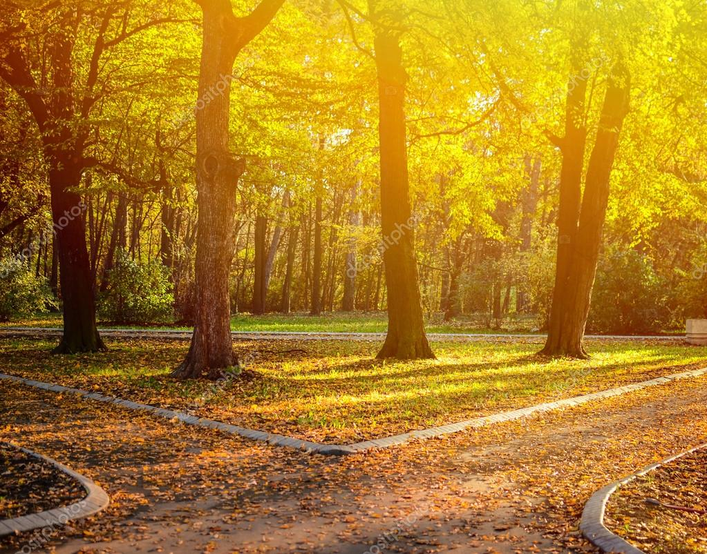

Em um dia, eu e Léo quisemos andar no meio da floresta, caminhamos por horas e horas, até que percebemos que está perdido.
Começamos a andar sem rumo em busca de água, um rio, ou algo para nos localizar, até que encontramos umcavalo e decidimos segui-lo, e avistamos um rio.
Eu e Léo seguimos o rio e nos deparamos com uma ponte de madeira velha.
Fomos passar pela velha ponte, e logo em seguida ela se quebrou, e Léo acabou caindo e sendo arrastado pela correnteza.
Eu e Léo seguimos o rio e nos deparamos com uma ponte de madeira velha..
Eu e Léo seguimos o rio e nos deparamos com uma ponte de madeira velha..